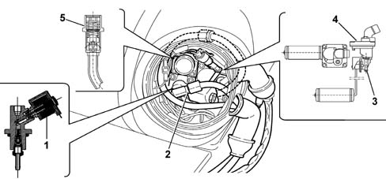

VALVE ASSEMBLY ON TANK
- Path
- Descriptions > 10 ENGINE > 1043 GPL TANK AND PIPES > 1043A GPL TANK > VALVE ASSEMBLY ON TANK
- Kind
- system description
- Applies to
- engines: 2.0 16V; all production periods; only with equipment: GPL
- Interactive page
- https://sloeber94.github.io/elrnDB-fDct/en/#/244000391
Applies to: engines: 2.0 16V; all production periods; only with equipment: GPL

LPG STORAGE SYSTEM COMPONENTS
Flange | 112 mm diameter flange housing the multivalve assembly |
|---|---|
LPG supply valve | Operated by a specific solenoid valve, 12V power supply, 1st absorption, closed if there is no electrical supply, sealed, with pressure decrease values that vary between 0.2 and 0.65 bar/h (with a maximum pump capacity of 120 l/h) |
LPG return valve | Valve with pressure decrease values that vary between 0.2 and 1.8 bar/h (with a maximum pump capacity of 120 l/h) |
Pressurizing valve | Valve with LPG pressurizing prevention when 80% of the maximum tank volume is reached: it takes about 3 minutes to fill a tank with a capacity of around 50 litres |
Safety valve | Intervention pressure (tank pressure) less than or equal to 27 bar; allows the controlled escape of LPG |
Flow restricter valve | Located inside the supply valve, intervention pressure 0.9 bar (in accordance with regulation E67-01) , it limits the flow rate if the pipes are broken |
Electric cable duct | 4 pin for pump connection, two for level transducer connection, sealed |
LPG pump | Submerged with drip tray and jet pump, complete with filter, 7 - 15V power supply, max absorption 6°, max flow rate 120 l/h, operating temperature range -40°C - 80°C |
Level gauge | Reed relay electronic transducer (5 mm reed), 12V power supply, ohmmic resistance with tank empty %gt; 900%Ohgr; ohmmic resistance with tank full %gt; 3000 %Ohgr; temperature operating range -20°C - 80°C, max. operating pressure 70 bar |